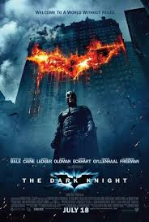

Batman: O Cavaleiro das Trevas

🎥 Sinopse: Quando Gotham está ameaçada por um novo criminoso, Batman deve lutar contra seu inimigo mais perigoso, o Coringa, que busca espalhar o caos na cidade.
🎬 Faixa Etária: 14 anos
🎞️ Gênero: Ação, Drama, Crime